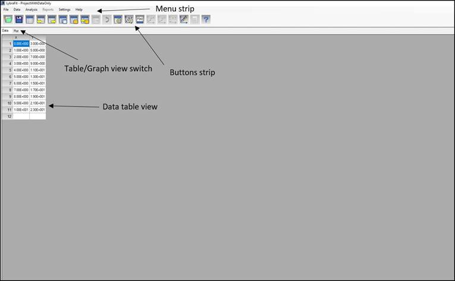
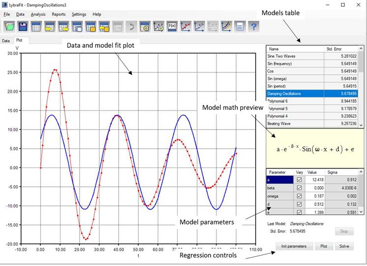

The screen below describes the main user interface parts of LybraFit. There are two data views - Table and Plot

Menu strip provides access to all commands. Some of them can be accessed via the button strip.
The table view is used for entering and editing data values.
Below is shown the plot view

The data and models plot display the entered data and the graph plot of the current model function with parameter values as listed in the model parameters table.
The model table lists the models added to the project together with standard errors for the current approximation. The model parameters table lists the parameters values and allows you to change them.
The regression control buttons allows you to re-initialize parameters for library functions, refresh the plot and run non-linear regression.
You can switch between two tabs with keys Ctrl + G for plot (graphics) view and Ctrl +T for table view.